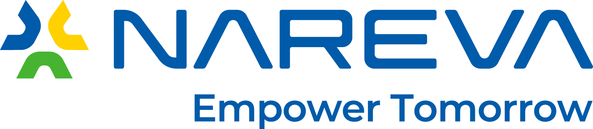

Ran the platform — content & CMS, not the original build
 Visit diriddik.ma
Visit diriddik.ma
Dir iddik — Inwi's national volunteering platform
A trilingual Drupal platform connecting Moroccan volunteers with associations. More than 70,000 people have come through it. For two years I was the one keeping it alive: publishing and integrating the content, running the CMS, coordinating the production shoots — and installing the connected classrooms on site, in the schools.
- 70,000+ volunteers
- French, English, Arabic
- Two years as the person accountable when it broke
Platform partners — not my clients, the initiative's

Fondation Al Mada